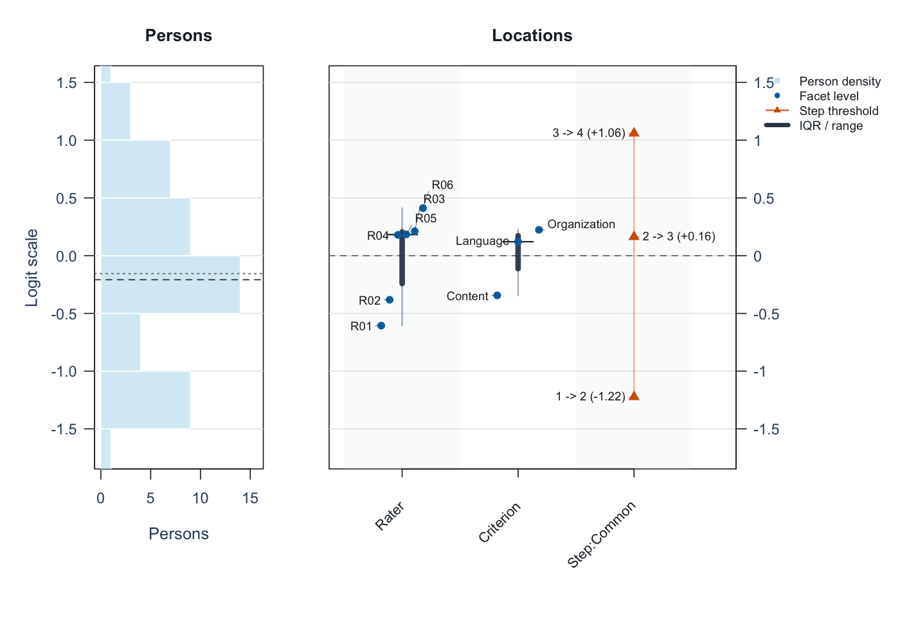

Account for rater differences. Plan your assessment. Report the results.
The same performance can receive different scores from different raters. For speaking performances, essays and other rated work, mfrmr helps you:
- Measure performance: estimate person ability while accounting for rater severity and task or criterion difficulty.
- Plan ratings: compare what adding raters or tasks would do to score precision.
- Explain results: examine agreement and prepare tables, figures and reports for researchers or raters.
Explore the interactive gallery: inspect values, compare rating plans, and reuse the ggplot2 code in your report.
Install the version used here
These examples require the unreleased 0.2.4 candidate. If the maintainer has supplied its .tar.gz archive, select it here:
install.packages(file.choose(), repos = NULL, type = "source")Source installation requires R build tools. Keep the archive and checksum: different candidates share version 0.2.4. Without the candidate, use install.packages("mfrmr") for the CRAN release and follow its installed tutorials via browseVignettes("mfrmr"); some features below will be unavailable.
Try one assessment
Start with synthetic data for 48 people, six raters and three criteria. Each person is assigned two raters; 282 of 288 planned ratings are observed. Here, interpret 1 as lower performance and 4 as higher performance.
library(mfrmr)
ratings <- load_mfrmr_data("example_operational")
head(ratings[c("Person", "Rater", "Criterion", "Score")], 3)| Person | Rater | Criterion | Score |
|---|---|---|---|
| P001 | R01 | Language | 4 |
| P001 | R01 | Organization | 2 |
| P001 | R02 | Content | 4 |
One row is one observed rating. Missing ratings are absent rows, not zeros. A facet is a source of variation: here, the rater and assessment criterion.
Fit a rating-scale model (RSM), which uses shared category steps across criteria, by marginal maximum likelihood (MML). For your assessment, see the model-choice guide.
fit <- fit_mfrm(
ratings, person = "Person", facets = c("Rater", "Criterion"), score = "Score",
rating_min = 1, rating_max = 4, category_policy = "preserve",
method = "MML", model = "RSM"
)
analysis <- mfrm_results(fit, include = "publication") # Gather diagnostics and tables
check <- summary(analysis)
check$decision[, c("FormalInference", "NextAction")]Here, FormalInference is Yes: the implemented inference checks pass. If it is No for your data, follow NextAction before making inferential claims. Passing these checks does not establish construct validity.
Read the first figure
plot(fit, show_ci = FALSE)
Start with Rater: R01 is about −0.61 and R06 about +0.41 logits. Higher rater locations mean lower expected scores for the same person and criterion, so R06 is estimated to score more strictly. Zero is a centered reference, not a quality standard; point estimates alone do not establish a statistically significant difference. The IQR bars describe spread, not uncertainty.
The left panel shows person estimates; other columns show criteria and category steps. See the visual guide. State what high scores mean: difficulty in understanding and ease of understanding run in opposite directions.
Make a report and keep the analysis
report <- mfrm_report(analysis, style = "apa", output = "html")
browseURL(report$path) # Open the draft report in your browser
export_mfrm_results(analysis, output_dir = "assessment-export", preset = "starter")The report combines results, checks and draft wording; the export saves tables, available figures and a reloadable analysis. Open assessment-export/index.html to navigate the saved files. Add your study question, sampling, rubric and interpretation. Review person-level information before sharing.
The reporting guide introduces three editable manuscript templates:
| Your question | Template |
|---|---|
| Report a one-family GPCM analysis |
gpcm-report.Rmd: measures, precision, fit, agreement and figures. |
| Compare rater/task plans |
gtheory-report.Rmd: sources of variation, plans and uncertainty. |
| Review anchors, bias or model choice |
assessment-review.Rmd: select the relevant modules. |
Templates require R Markdown and Pandoc; the HTML report above does not. The guide distinguishes separation, Strata and reliability from observed agreement (Krippendorff’s alpha and pairwise Cohen’s kappa).
Choose your next task
| Task | Guide |
|---|---|
| Use your own CSV | Data-to-report workflow |
| Plan the number of raters or tasks | G-theory and assessment design |
| Review agreement and rater differences | Agreement; rater intervals |
| Check rating links; explore residual patterns | Networks and reporting |
| Choose a model | Model choice; GPCM scope |
| Reuse a calibration or move from other software |
Portable calibration; FACETS migration; ?build_conquest_overlap_bundle
|
| Continue in Stan/brms and report saved estimates | Model export; return to figures and reports |
In R, use mfrmr_output_guide("beginner") to choose an entry point. The public website may be older; browseVignettes("mfrmr") matches your installation.
Updating, scope and citation
Installing a new version does not update saved calculations. Keep originals and follow NEWS and Updating saved analyses for 0.2.4 in help("mfrmr_workflow_methods"). For retired drawing helpers, see help("mfrmr_plot_migration"); plot() is the main entry point.
Native measurement models use one ordered score scale and one latent person dimension. Two-family GPCM and other experimental routes have separate limits in the model guides. G/D studies concern variation in defined observed scores. The roadmap separates current capabilities from future work.
Use citation("mfrmr") and the methodological references in the relevant help. Licensed under the MIT License.
mfrmr has benefited from discussion and methodological input from Dr. Atsushi Mizumoto and Dr. Taichi Yamashita.